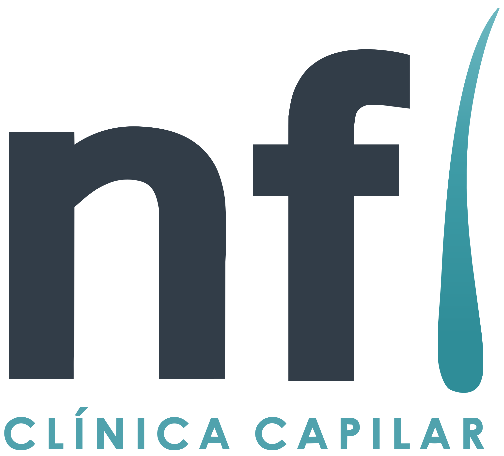
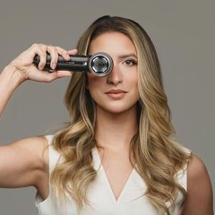

Clínica capilar em Teresina

Um caso por vez. Arraste a régua na foto: antes de um lado, depois do outro.
Use as setas ou deslize pelo texto para trocar de caso
Imagens publicadas pela própria clínica em @novofioteresina e no site da rede novofio. Conteúdo informativo: cada organismo responde de um jeito e nenhum resultado é garantido. A indicação depende de avaliação médica. Médico responsável: Dr. Audir Carvalho Jr, CRM-SP 244.693.
Três toques e a clínica já recebe o seu caso organizado.
Toque onde incomoda. Pode marcar mais de um.
Há quanto tempo? Arraste o nó pelo fio.
O que você já tentou?
O que mais te segura? Vire uma carta.
Isto organiza a sua conversa com a clínica. Não é diagnóstico: quem avalia é o médico.
Quem passou pela clínica contando do próprio jeito. Toque para assistir no Instagram.
Comentários reais nos posts dos pacientes. Toque para balançar.
O caminho descrito pela própria clínica, sem pular etapa.
Uma câmera de alta resolução analisa couro cabeludo e fios. É o primeiro passo.
Tratamento clínico, transplante ou os dois. A estratégia é definida pelo médico.
Em alguns casos a clínica prepara o couro cabeludo antes, como na mesoterapia do Alysson.
No transplante FUE, as unidades foliculares saem da área doadora uma a uma e são implantadas.
A evolução é registrada em imagens, consulta após consulta.
Raspe com o dedo para revelar.
Nem sempre. A clínica realiza transplante com a técnica No Shave, como no caso publicado do Edson. A indicação é do médico.
Os fios são do próprio paciente e cada folículo é distribuído respeitando direção, angulação e espaçamento.
Existem tratamentos clínicos na clínica, como mesofio, exofio, PDRN e ledterapia. A avaliação define.
Toque para abrir e tirar a dúvida direto com a clínica.
A unidade de Teresina é liderada pelo Dr. Audir Carvalho Jr.

Fátima, Teresina-PI · CEP 64049-305
Empresas, associações e criadores de conteúdo falam direto com a equipe.
Vamos fazer uma parceria?